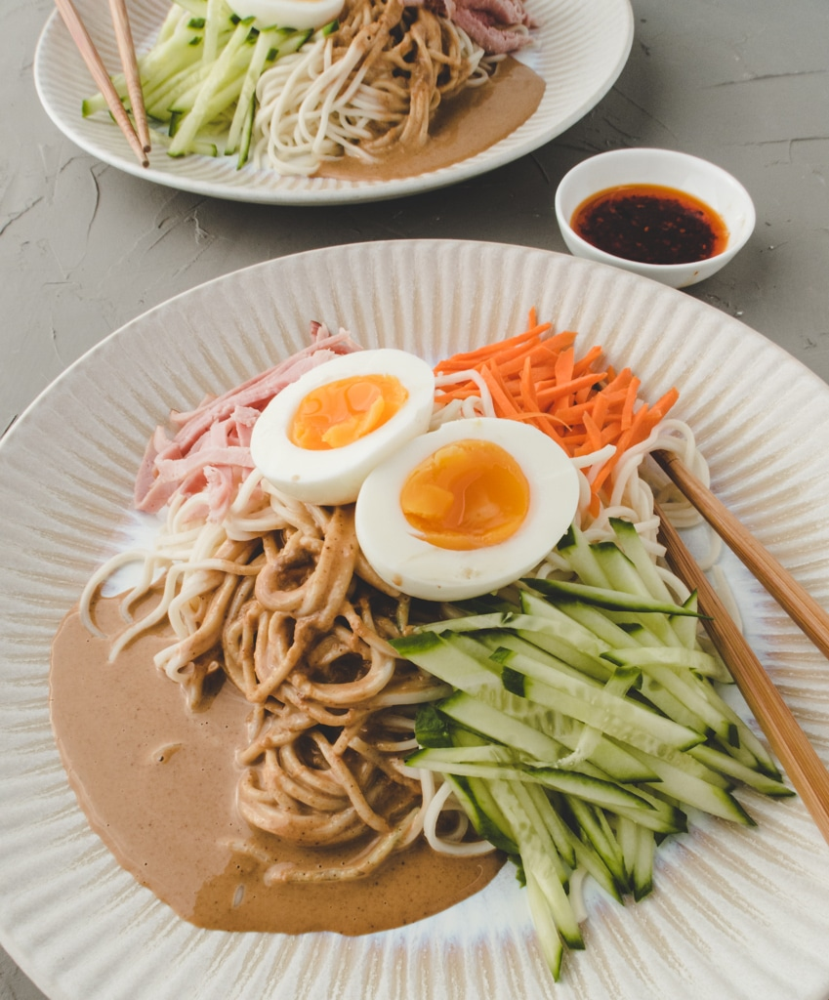

Description
Taiwanese cold noodles is a dish that's perfect to make on hot days,
as it requires minimal cooking, and tastes refreshing yet satisfying.
The magic of this dish is that even though it's a meal that takes less than 30 minutes to put together,
the combination of elements in the peanut-sesame dressing still packs a deep and satisfying flavor.
Ingredients
- Rice Vinegar
- Seasame Oil
- Sugar
- Sesame Paste/li>
- Peanut Butter
- Soy Sauce
- Garlic
Steps
- Put all the dressing ingredients into a salad shaker or mason jar and shake until the dressing is smooth.
- Cook noodles according to the package, do not over cook!
- When the noodles are done cooking, soak or rinse it with cold water to cool down. Remember to drain it-- don't let the noodle sit in water.
- Try the dressing to see if the flavor needs to be adjusted base on your taste.
- Top the noodles with any toppings you like, mix with sesame dressing and enjoy!
Back